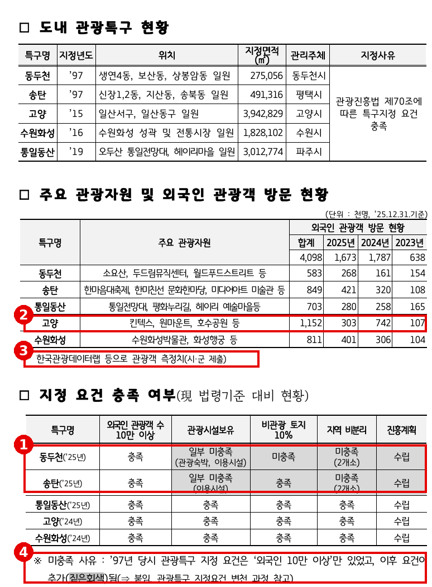
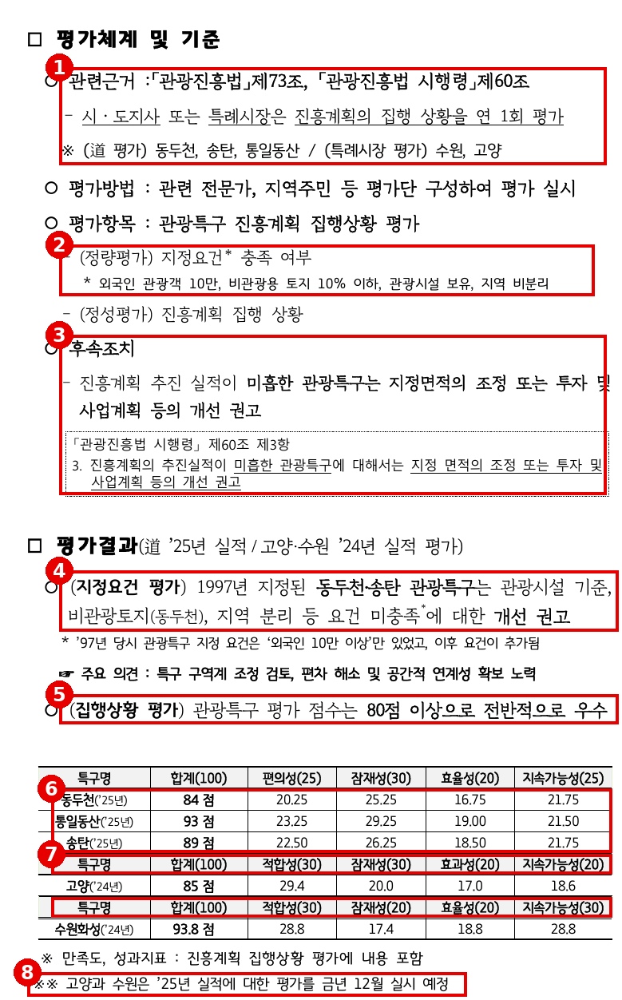
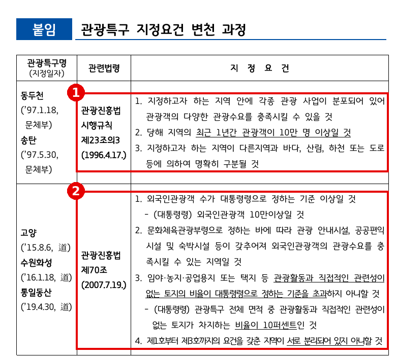
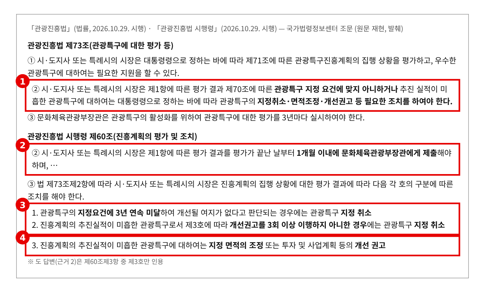
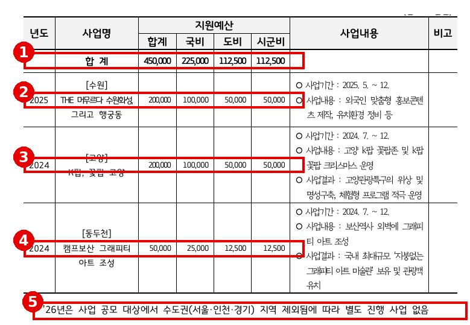
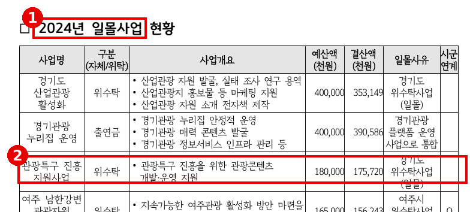
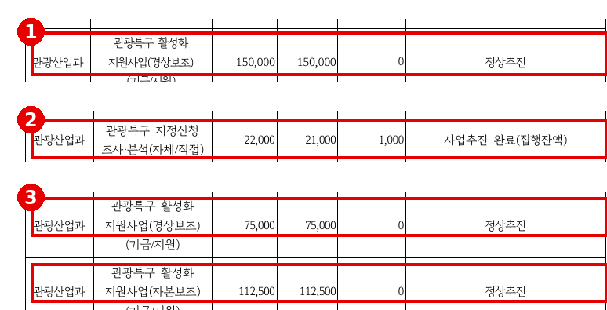
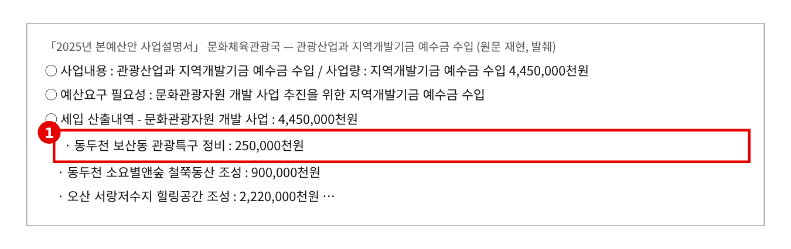
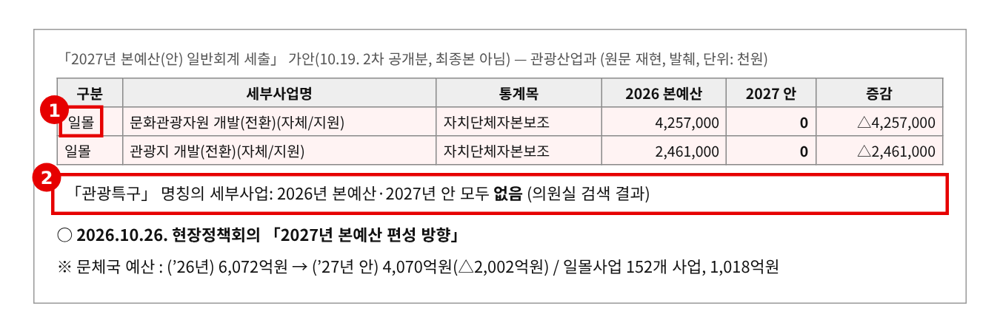
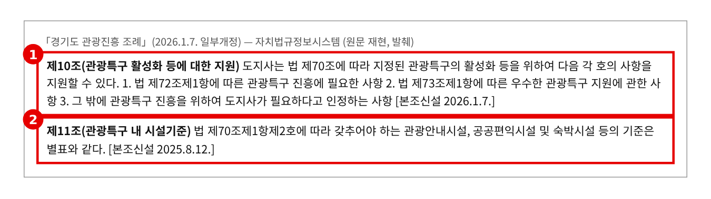

2026년 행정사무감사 질의서 (발언용 · 5분) — 집행부 2일차
관광특구, 지정요건 미충족인데 평가는 "우수"
— 법은 "필요한 조치를 하여야 한다", 도는 "개선 권고"만
문화체육관광위원회 황은화 위원 → 문화체육관광국장(관광산업과)
| ① 요건 미충족인데 "우수" | 동두천·송탄(1997 지정): 관광시설·비관광토지·지역분리 요건 일부 미충족. 평가는 84점·89점 → 도 평가는 "80점 이상으로 전반적으로 우수" — 요건 미충족이 점수에 반영되지 않는다 |
|---|---|
| ② 법이 정한 조치는 없다 | 관광진흥법 제73조②는 요건 미달 특구에 지정취소·면적조정·개선권고 등 "필요한 조치를 하여야 한다" → 도는 "개선 권고"만. 제출 자료 어디에도 면적 조정 기록 없음. 고양 외국인 방문 59% 감소 |
| ③ 2027년, 관리 수단이 없다 | 국비 공모 2026년 수도권 제외, 관광공사 특구 진흥사업 2024년 일몰 → 2027 예산안(가안) 특구 사업 없음, 문화관광자원 개발 42억 원도 일몰 |
※ 의원실 메모 (발언 제외) · 160·161번은 이오수·김승기·안시현·이지혜·한규찬 위원과 공동 요구한 자료다. 같은 자료로 다른 위원 질의가 나올 수 있어 사전 확인이 필요하다. · 이미정 위원 외래관광객 질의와 일부 인접 — 이 질의는 특구 관리체계(요건·평가·조치·예산)로 한정한다. · "면적 조정을 한 적이 없다"는 단정이 아니라 "제출 자료에 기록이 없다"로 묻는다. 동두천 보산동 특구 정비 2억 5천만 원은 2025년 예산안 기준이며 실제 집행은 요구자료로 확인한다. · 2027년 예산은 「2027년 본예산(안)」 가안(10.19.) 기준이다. 최종안 제출 전이지만 일몰을 계획한 상황으로 보고 묻는다. |
※ 발언 중 [근거 n] 표시는 맨 뒤 「근거자료」 번호입니다.
■ 발언 — 도입
국장님, 도내 관광특구 관리에 대해 묻겠습니다.
경기도에는 동두천, 송탄, 고양, 수원화성, 통일동산, 다섯 곳의 관광특구가 있습니다. 2025년 외국인 관광객 167만 명이 다녀갔습니다. [근거 1]
관광특구는 법으로 지정합니다. 그래서 법이 정한 지정 요건이 있고, 매년 평가하고, 요건에 맞지 않으면 조치하도록 돼 있습니다. 오늘은 이 세 가지가 제대로 돌아가는지, 그리고 내년 예산은 어떻게 준비했는지 확인하겠습니다.
▶ 질문 1. 요건을 못 채워도 "우수"입니다
도가 낸 자료를 보겠습니다. 1997년에 지정된 동두천과 송탄은 관광시설 기준이 일부 미충족이고, 지역도 두 곳으로 분리돼 있습니다. 동두천은 관광과 관계없는 토지 비율도 10%를 넘습니다. [근거 1]
그런데 평가 점수는 동두천 84점, 송탄 89점입니다. 도는 "평가 점수는 80점 이상으로 전반적으로 우수"라고 정리했습니다. [근거 2]
평가 항목에는 "지정요건 충족 여부"가 정량평가로 들어 있다고 적혀 있습니다. 그런데 점수표 어디에도 요건 항목은 없습니다. 편의성, 잠재성, 효율성, 지속가능성뿐입니다. 게다가 도와 고양, 수원의 평가표가 세 가지로 다릅니다. [근거 2]
국장님, 법정 요건을 못 채운 특구가 왜 "우수"입니까? 요건 미충족은 점수 어디에 반영됩니까?
▷ "1997년 지정 당시에는 외국인 10만 명 요건만 있었다"
→ 지금 요건이 생긴 것은 2007년 법 개정입니다. 19년 지났습니다. 도가 낸 붙임을 봐도 1996년 기준에 이미 관광사업 분포와 지역 구분 요건이 있었습니다. 법은 지금의 요건에 맞는지를 평가하라고 합니다. [근거 3] [근거 4]
▷ "요건은 별도로 개선 권고하고, 점수는 진흥계획 집행 상황을 본 것이다"
→ 그러니 요건을 못 채운 특구가 "우수"로 발표됩니다. 요건 미충족 특구는 우수 판정을 제한하거나 감점하는 기준이 있어야 합니다. 도·고양·수원이 같은 기준으로 평가하도록 정해 주십시오. [근거 2]
▶ 질문 2. 법이 정한 조치는 하지 않았습니다
관광진흥법 제73조 제2항입니다. 지정 요건에 맞지 않는 특구에는 지정취소, 면적조정, 개선권고 등 필요한 조치를 "하여야 한다"고 했습니다. 시행령 제60조는 더 구체적입니다. 요건에 3년 연속 미달하면 지정 취소, 개선권고를 3회 이상 이행하지 않으면 지정 취소, 그리고 면적 조정입니다. [근거 4]
도 답변은 이 가운데 제3호, 개선 권고만 인용했습니다. 주요 의견에 "특구 구역계 조정 검토"라고 적었지만, 제출 자료 어디에도 면적을 조정한 기록은 없습니다. [근거 2]
평가 결과는 끝난 날부터 한 달 안에 문체부에 제출해야 합니다. 그 기록도 자료에 없습니다. [근거 4]
특례시가 평가하는 고양도 보겠습니다. 외국인 방문객이 2024년 74만 2천 명에서 2025년 30만 3천 명으로 59% 줄었습니다. 2023년은 10만 7천 명이었습니다. 숫자가 이렇게 출렁이는데, 측정치는 시·군이 제출한 값입니다. 고양과 수원의 2025년 평가는 올해 12월에 합니다. [근거 1] [근거 2]
동두천·송탄에 개선 권고를 지금까지 몇 번 했고, 이행됐습니까? 면적 조정은 왜 검토만 하고 있습니까?
▷ "요건 평가는 올해 처음 실시해 개선 권고한 것이다"
→ 그렇다면 지금부터 3년의 시계가 돌아갑니다. 이행 기한을 정한 조치계획을 내 주십시오. 지정 이후 연도별 평가 결과와 권고 이력도 함께 제출해 주십시오. [근거 4]
▷ "지정 취소는 지역 상권에 타격이 커 신중해야 한다"
→ 취소하자는 것이 아닙니다. 법은 면적 조정이라는 길을 열어 두었습니다. 요건에 맞는 구역으로 다시 그으면 특구를 지킬 수 있습니다. 권고만 반복하면 오히려 취소 사유가 쌓입니다. [근거 4]
▶ 질문 3. 2027년, 특구를 관리할 수단이 없습니다
활성화 지원은 어떻습니까. 국비 공모로 2024년 고양·동두천, 2025년 수원을 지원했습니다. 그런데 2026년에는 수도권이 공모 대상에서 빠져 지원이 없습니다. [근거 5]
경기관광공사가 하던 관광특구 진흥 지원사업(1억 8천만 원)은 2024년에 일몰됐습니다. 2024년에는 관광특구 지정신청 조사·분석도 했지만, 올해 집행 현황에는 관광특구 사업이 하나도 없습니다. [근거 6] [근거 7]
반면 요건을 못 채운 동두천에는 2024년 그래피티 사업에 이어, 2025년 예산안에 보산동 관광특구 정비 2억 5천만 원이 편성됐습니다. 구역을 다시 긋지 않고 정비비만 넣은 셈입니다. [근거 5] [근거 8]
그리고 2027년 예산안 가안에는 관광특구 사업이 하나도 없습니다. 특구 정비비가 나가던 문화관광자원 개발 42억 5,700만 원도 일몰입니다. 올해 1월 「경기도 관광진흥 조례」에 특구 지원 근거를 새로 만들었는데, 정작 내년 예산은 0원입니다. [근거 9] [근거 10]
안산 대부도처럼 새로 특구 지정을 준비하는 지역도 있습니다. 기존 특구를 법대로 관리하는 기준이 서야 새 지정도 설득력이 있습니다.
2027년에 관광특구의 평가·구역 조정·활성화는 어떤 예산으로 하시겠습니까?
▷ "국비 공모가 다시 열리면 적극 대응하겠다"
→ 수도권 제외는 문체부 결정입니다. 기다리기만 할 일이 아닙니다. 제외 해제를 건의하시고, 그 사이 도가 할 일은 해야 합니다. 평가 컨설팅, 구역계 조정 검토 같은 최소한의 관리 예산은 도 몫입니다. [근거 5] [근거 10]
▷ "외래관광객 유치·웰니스 관광 사업과 연계해 활성화하겠다"
→ 그 사업들은 홍보·상품 사업입니다. 요건 미충족을 해소하는 사업이 아닙니다. 특구를 법대로 관리하는 예산과 일반 홍보 예산은 구분해 주십시오. [근거 5]
■ 마무리 · 요구사항
국장님, 관광특구는 법으로 지정하고, 법으로 관리하는 제도입니다. 요건을 못 채운 특구가 "우수"로 발표되고, 법이 정한 조치 대신 권고만 반복되고, 내년에는 관리 예산마저 없습니다. 동두천과 송탄 주민·상인이 특구를 지키려면 지금 구역을 바로잡아야 합니다. 꼼꼼히 챙겨 주십시오.
하나, 동두천·송탄 관광특구의 지정 이후 연도별 평가 결과, 요건 충족 여부, 개선 권고 횟수·내용·이행 결과, 문체부 제출 공문(시행령 제60조제2항)을 감사 종료 전까지 제출하고, 시행령 제60조제3항에 따른 조치계획(구역계 조정을 우선 검토, 이행 기한 명시)을 2027년 3월까지 보고해 주십시오.
둘, 관광특구 평가 기준을 고쳐 주십시오. ① 지정요건 미충족 특구는 우수 판정을 제한하거나 감점하고, ② 도와 특례시(고양·수원)의 평가표를 공통 기준으로 맞추고, ③ 외국인 방문객 산정 기준을 통일해 주십시오. 고양·수원 평가가 있는 2026년 12월 전까지 협의 결과를 보고해 주십시오.
셋, 2027년 예산안에 관광특구 관리 사업이 없습니다. 「경기도 관광진흥 조례」 제10조에 따라 평가 컨설팅·구역계 조정 검토 등 최소 관리 예산 반영 여부를 2027년 본예산 상임위 심사 전까지 보고하고, 국비 공모 수도권 제외 해제를 문체부에 건의한 결과를 2027년 3월까지 알려 주십시오.
■ 참고 · 감사 중 추가 요구자료
· 동두천·송탄 관광특구 지정 이후 연도별 진흥계획 평가 결과와 개선 권고·이행 결과(최근 5년 이상)
· 도 평가단 구성·평가표 원본, 고양·수원(특례시) 평가표와 평가 결과의 도 보고·문체부 제출 내역
· 관광특구 활성화 지원사업 예산(161번) 2024~2027년 연도별 국비·도비·시군비, 관광공사 위수탁 포함
· 2025년 동두천 보산동 관광특구 정비(250,000천원) 교부·집행 내역과 사업 위치(특구 구역 안·밖)
· 2024년 관광특구 지정신청 조사·분석(22,000천원) 대상 지역·과업 내용·결과보고서
· 고양 관광특구 외국인 방문객 산정 방법(2023~2025년, 자료 출처·집계 기준)
근 거 자 료
빨간 상자·번호는 발언에서 짚는 부분입니다. "원문 재현"은 법령·조례·한글(hwpx)·엑셀 원문을 그대로 옮겨 표시한 것이고, "의원실 산출"은 원자료로 계산한 값입니다.
▶ 질문 1 관련
근거 1. 도내 관광특구 현황 · 외국인 방문객 · 지정요건 충족 여부 
※ 출처: 문화체육관광국 행정사무감사 1차 요구자료(발간본 3권) 160번 「경기도 내 관광특구 지정 및 관리 현황」(관광산업과) 484쪽 |
근거 2. 평가체계·평가결과 — 요건 미충족인데 "전반적으로 우수" 
※ 출처: 문화체육관광국 행정사무감사 1차 요구자료(발간본 3권) 160번 「경기도 내 관광특구 지정 및 관리 현황」(관광산업과) 485~486쪽 |
근거 3. 관광특구 지정요건 변천 과정 (도 제출 붙임) 
※ 출처: 문화체육관광국 행정사무감사 1차 요구자료(발간본 3권) 160번 「경기도 내 관광특구 지정 및 관리 현황」(관광산업과) 487쪽 붙임 |
▶ 질문 2 관련
근거 4. 관광진흥법 제73조 · 시행령 제60조 
※ 출처: 「관광진흥법」 제73조, 「관광진흥법 시행령」 제60조(2026.10.29. 시행, 국가법령정보센터) (원문 재현, 발췌) |
▶ 질문 3 관련
근거 5. 관광특구 활성화 지원사업 목록 — 2026년 수도권 제외 
※ 출처: 문화체육관광국 행정사무감사 1차 요구자료(발간본 3권) 161번 「관광특구 활성화 지원 사업 현황」(관광산업과) 489쪽 |
근거 6. 경기관광공사 「관광특구 진흥 지원사업」 — 2024년 일몰 
※ 출처: 경기관광공사 2026년 행정사무감사 요구자료(공통) 127쪽 「2024년 일몰사업 현황」 |
근거 7. 문체위 소관 사업 집행 현황 — 관광특구 관련 (2025·2024년) 
※ 출처: 문화체육관광국 행정사무감사 1차 요구자료(발간본 2권) 2번 「문체위 소관 전체 사업의 집행 현황(최근 3년)」 92쪽(2025년)·116~117쪽(2024년) |
근거 8. 2025년 예산안 — 동두천 보산동 관광특구 정비 2억 5천만 원 
※ 출처: 「2025년 본예산안 사업설명서」 문화체육관광국(문화세입~체육세출) 관광산업과 지역개발기금 예수금 수입 (원문 재현, 발췌) |
근거 9. 2027년 본예산(안) 가안 — 특구 사업 없음, 문화관광자원 개발 일몰 
※ 출처: 「2027년 본예산(안) 일반회계 세출」 가안(10.19. 2차 공개분, 최종본 아님), 2026.10.26. 현장정책회의 「문체국 본예산안」 (원문 재현, 발췌) |
근거 10. 경기도 관광진흥 조례 — 특구 지원 근거(2026.1.) · 시설기준(2025.8.) 
※ 출처: 「경기도 관광진흥 조례」(2026.1.7. 일부개정, 자치법규정보시스템) (원문 재현, 발췌) |